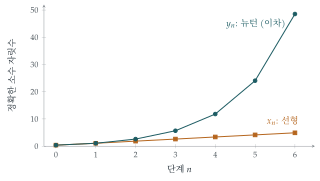

STEP II 2023, 문제 5
다음으로 넘어가기 전에 문제를 먼저 읽어 보자. 이 문제는 OCR에서 내려받을 수 있는 2023년 STEP 문제지 모음(zip 파일)의 STEP II 문제지에 있다: www.ocr.org.uk/Images/707102-2023-past-papers.zip
도입
\(\sqrt2\)를 근사하는 간단한 방법이 두 가지 있다. 둘 다 \(1\)에서 시작하고, 덧셈, 곱셈, 나눗셈만 사용한다. 열 단계를 거친 뒤 첫 번째 방법은 소수점 아래 약 \(8\)자리까지 정확하다. 두 번째 방법은 \(700\)자리 넘게 정확하다.
두 번째 방법이 \(\sqrt2\)에 대해 더 영리해서 이런 차이가 생기는 것은 아니다. 차이는 오차의 모양에 있다. 첫 번째 방법에서는 각 단계가 오차에 일정한 비율을 곱하고, 두 번째 방법에서는 각 단계가 오차를 제곱한다. 이 문제는 이 사실을 엄밀하게 다루며, 그 과정에서 수치해석(numerical analysis)의 핵심 아이디어 하나를 소개한다. 수치해석은 모든 계산기, 모든 일기예보, 모든 공학 시뮬레이션의 바탕이 되는 분야이다.
시작하기 전에
각 수열의 처음 몇 항을 분수로 계산해 보자. \[x_n: \quad 1,\; \frac32,\; \frac75,\; \frac{17}{12},\; \frac{41}{29},\; \frac{99}{70},\; \ldots \qquad y_n: \quad 1,\; \frac32,\; \frac{17}{12},\; \frac{577}{408},\; \frac{665857}{470832},\; \ldots\]
두 목록에서 눈에 띄는 점이 있는가? (두 목록에 모두 나타나는 분수를 살펴보라.)
모든 \(y_n\)은 \(x\) 목록에 나타나지만, 점점 더 뒤쪽에 나타난다. \(y_2 = x_3\), \(y_3 = x_7\)이고, 일반적으로 \(y_n = x_{2^n - 1}\)이다. 두 번째 방법은 같은 근삿값의 수열을 지수적으로 빠르게 건너뛰며 나아가는 것이다. 이 점을 기억해 두자. 그 이유는 끝에서 설명한다.
차근차근 풀기
단계 1 첫 번째 방법은 항상 1 이상이다
\(x_{n+1} = 1 + \dfrac{1}{x_n + 1}\)로 쓸 수 있다. \(x_n \geq 1\)이면 \(x_n + 1 > 0\)이므로 \(x_{n+1} > 1\)이다. \(x_0 = 1\)이므로, 수학적 귀납법(induction)에 의해 모든 \(n\)에 대해 \(x_n \geq 1\)이다.■
단계 2 첫 번째 방법의 오차
문제는 오차를 \(x_n - \sqrt2\)가 아니라 \(x_n^2 - 2\)로 측정한다. \(x_{n+1}^2 - 2\)를 \(x_n\)에 관한 하나의 분수로 나타내어라. 분자에서 무엇을 알 수 있는가?
\[x_{n+1}^2 - 2 = \frac{(x_n + 2)^2 - 2(x_n + 1)^2}{(x_n + 1)^2} = \frac{x_n^2 + 4x_n + 4 - 2x_n^2 - 4x_n - 2}{(x_n + 1)^2} = \frac{2 - x_n^2}{(x_n + 1)^2}.\] 분자는 정확히 \(-(x_n^2 - 2)\)이다. 따라서 \(x_{n+1}^2 - 2\)와 \(x_n^2 - 2\)는 부호가 반대이고(근삿값이 \(\sqrt2\)의 양쪽을 번갈아 오간다), \(x_n \geq 1\)이면 \((x_n + 1)^2 \geq 4\)이므로 \[\bigl|x_{n+1}^2 - 2\bigr| = \frac{|x_n^2 - 2|}{(x_n + 1)^2} \leq \frac14\bigl|x_n^2 - 2\bigr|. \qed\]
단계 3 열 단계
이를 열 번 적용하면 \(|x_{10}^2 - 2| \leq 4^{-10}|x_0^2 - 2| = 4^{-10} = \frac{1}{1048576} < 10^{-6}\)이다. 부호를 보면, \(x_0^2 - 2 = -1 < 0\)이고 부호가 번갈아 바뀌므로 모든 짝수 \(n\)에 대해 \(x_n^2 - 2 < 0\)이다. 따라서 \(x_{10}^2 < 2\)이고, 이 둘을 합치면 \(2 - 10^{-6} \leq x_{10}^2 \leq 2\)를 얻는다.■
\(x_n^2\)의 오차는 각 단계에서 많아야 \(\frac14\)배가 된다. 이를 선형 수렴(linear convergence)이라 한다. 단계마다 정확한 자릿수가 일정한 개수만큼 늘어난다(여기서는 적어도 \(\log_{10} 4 \approx 0.6\)자리이고, 실제로는 \(0.77\)에 더 가깝다).
단계 4 두 번째 방법의 오차
\(y_{n+1} - \sqrt2\)를 하나의 분수로 나타내어라. 분자를 보면 완전제곱식이 떠오를 것이다.
\[y_{n+1} - \sqrt2 = \frac{y_n^2 + 2 - 2\sqrt2\, y_n}{2y_n} = \frac{\bigl(y_n - \sqrt2\bigr)^2}{2y_n}. \qed\] \(y_n > 0\)이면 우변은 음이 아니므로 \(y_{n+1} \geq \sqrt2 > 1\)이다. \(y_0 = 1\)이므로, 귀납법에 의해 모든 \(n\)에 대해 \(y_n \geq 1\)이다.■ (실제로 모든 \(n \geq 1\)에 대해 \(y_n \geq \sqrt2\)이다. 즉 첫 단계 이후 두 번째 방법은 항상 위쪽에서 \(\sqrt2\)에 다가간다.)
단계 5 오차의 제곱
\(e_n = y_n - \sqrt2\)라 하자. 그러면 \(n \geq 1\)일 때 \(e_n \geq 0\)이고, \(y_n \geq 1\)이므로 \(e_{n+1} = \dfrac{e_n^2}{2y_n} \leq \dfrac{e_n^2}{2}\)이다.
\(r = \frac{\sqrt2 - 1}{2}\)일 때, \(n \geq 1\)에 대해 \(e_n \leq 2r^{2^n}\)임을 귀납법으로 증명하여라. 기저 단계를 주의 깊게 확인하라.
기저 단계(base case): \(e_1 = \dfrac{(1 - \sqrt2)^2}{2 \cdot 1} = \dfrac{(\sqrt2 - 1)^2}{2}\)이고, \(2r^2 = 2 \cdot \dfrac{(\sqrt2 - 1)^2}{4} = \dfrac{(\sqrt2 - 1)^2}{2}\)이다. 두 값이 같으므로 기저 단계가 (등호로 정확히) 성립한다.
귀납 단계(inductive step): \(e_n \leq 2r^{2^n}\)이면 \[e_{n+1} \leq \frac{e_n^2}{2} \leq \frac{4r^{2^{n+1}}}{2} = 2r^{2^{n+1}}. \qed\]
단계 6 600자리
\(\sqrt2 - 1 < \frac12\)이므로 \(r < \frac14\)이고, 따라서 \[0 \leq y_{10} - \sqrt2 \leq 2 \left(\frac14\right)^{2^{10}} = 2 \cdot 2^{-2048} = 2^{-2047}.\] 그런데 \(2^{10} = 1024 > 10^3\)이므로 \(2^{-2047} < 2^{-2040} = (2^{10})^{-204} < 10^{-612}\)이고, 이는 분명히 \(10^{-600}\)보다 작다.■
돌아보기
오차 점화식을 찾아라. 두 부분 모두 새 오차를 이전 오차의 정확한 함수로 나타내어 풀었다. 나머지는 모두 여기서 따라 나왔다. 이러한 식을 오차 점화식(error recurrence)이라 한다.
선형 대 이차. “새 오차 \(\leq\) 상수 \(\times\) 이전 오차”이면 단계마다 자릿수가 일정한 개수만큼 늘어난다. “새 오차 \(\leq\) 상수 \(\times\) (이전 오차)\(^2\)”이면 단계마다 정확한 자릿수의 개수가 두 배가 된다(그림 2.7.1).
제곱된 양이 부호를 결정한다. (ii)에서 한 단계 후의 오차는 제곱을 양수로 나눈 것이므로 결코 음수가 될 수 없다. 즉 반복은 위쪽에서 다가간다.
숨은 수학
두 번째 방법은 \(f(y) = y^2 - 2\)에 뉴턴 방법(Newton’s method)을 적용한 것이다. 뉴턴 방법은 추측값 \(y\)를 \(y\)에서의 접선(tangent)이 축과 만나는 점으로 바꾸는 과정을 반복하여 \(f\)의 근을 찾는다. \[y_{\text{새}} = y - \frac{f(y)}{f'(y)} = y - \frac{y^2 - 2}{2y} = \frac{y^2 + 2}{2y}.\] 단순근(simple root) \(\alpha\) 근처에서 테일러 전개(Taylor expansion)를 하면 새 오차가 대략 \(\frac{f''(\alpha)}{2f'(\alpha)} \times (\text{이전 오차})^2\)임을 알 수 있다. 이것이 뉴턴 방법이 이차 수렴(quadratic convergence)하는 이유이다. “\(y\)와 \(2/y\)의 평균을 취한다”는 이 특별한 경우는 바빌로니아인들도 알고 있었다. 오늘날 YBC 7289라고 불리는 기원전 1700년경의 점토판에는 \(\sqrt2\)가 \(60\)진법으로, 백만분의 일보다 작은 오차로 적혀 있다.

고정점과 수렴 속도
두 방법 모두 \(g(\sqrt2) = \sqrt2\)인 \(u_{n+1} = g(u_n)\) 꼴이므로, 2.2 절의 거미줄 그림(cobweb diagram)에서처럼 \(\sqrt2\)는 고정점(fixed point)이다. 고정점 \(\alpha\) 근처에서 오차는 각 단계마다 약 \(g'(\alpha)\)배가 된다. 첫 번째 방법에서는 \(g(x) = \frac{x+2}{x+1}\)이고 \(g'(\sqrt2) = -\frac{1}{(\sqrt2+1)^2} = -(3 - 2\sqrt2) \approx -0.17\)이다. 음의 부호는 부호가 번갈아 바뀌는 현상을 설명하고, \(0.17\)은 단계마다 \(0.77\)자리씩 늘어나는 것을 설명한다(\(\log_{10}(1/0.17) \approx 0.77\)). 뉴턴 방법에서는 \(g'(\alpha) = 0\)이므로 일차항이 사라지고, 오차는 그다음 항, 곧 제곱항이 결정한다. \(g'(\alpha) = 0\)인 반복을 설계하는 것이 빠른 수치 계산법의 기술이다.
같은 분수가 나타나는 이유
분수 \(x_n = p_n/q_n\)은 \(p_{n+1} = p_n + 2q_n\)과 \(q_{n+1} = p_n + q_n\)을 만족하고, \(p_n^2 - 2q_n^2 = \pm 1\)이며 부호가 번갈아 나타난다. 이들은 펠 방정식(Pell’s equation) \(p^2 - 2q^2 = \pm1\)의 해이며, 연분수(continued fraction) \(\sqrt2 = [1; 2, 2, 2, \ldots]\)의 근사분수(convergent)이다. 이들은 \(1 + \sqrt2\)의 거듭제곱에서 나온다. 즉 \(p_n + q_n\sqrt2 = (1 + \sqrt2)^{n+1}\)이다. 뉴턴 방법의 한 단계는 \(p + q\sqrt2\)를 제곱한다(직접 확인해 보라. \((p + q\sqrt2)^2 = p^2 + 2q^2 + 2pq\sqrt2\)이고, \(\frac{p^2 + 2q^2}{2pq}\)는 정확히 \(p/q\)에 뉴턴 공식을 적용한 것이다). 제곱하면 지수가 두 배가 되므로 \(y_n = x_{2^n - 1}\)이다. 같은 “제곱” 패턴이 2.8 절의 반복을 이끈다.
사고 기술
근삿값이 어떻게 움직이는지 이해하려면, 한 단계의 오차가 바로 앞 단계의 오차에 어떻게 의존하는지 적어 보라.
이것이 수치해석의 출발점이다. 답 자체(\(\sqrt2\))는 두 방법에서 같다. 다른 것, 그리고 실제로 중요한 것은 오차가 어떻게 변해 가는가이다.
더 도전하기
펠 방정식. \(y_n = p/q\)가 기약분수이고 \(p^2 - 2q^2 = 1\)이면, \(y_{n+1} = \dfrac{p^2 + 2q^2}{2pq}\)도 이 방정식을 만족함을 보여라. \(577^2 - 2 \times 408^2 = 1\)임을 확인하라.
세제곱근. \(f(y) = y^3 - 2\)에 대한 뉴턴 방법을 적고, \(\alpha = \sqrt[3]2\)일 때 새 오차가 \(\dfrac{(y_n - \alpha)^2 (2y_n + \alpha)}{3y_n^2}\)임을 보여라. 이로부터 \(y_n > \alpha\)이면 새 오차가 이전 오차의 제곱의 많아야 \(\frac{1}{\alpha}\)배임을 이끌어 내라. (힌트: \(\alpha^3 = 2\)를 이용하라.)
나누지 않고 나누기. \(f(y) = \frac1y - a\)에 대한 뉴턴 방법이 나눗셈이 필요 없는 \(y_{n+1} = y_n(2 - a y_n)\)을 줌을 보여라. \(e_n = 1 - a y_n\)이라 하면 \(e_{n+1} = e_n^2\)임을 보여라. (컴퓨터 프로세서는 이와 같은 반복을 이용해 나눗셈을 한다.)
뉴턴 방법이 실패할 때. 유일한 근이 \(0\)인 \(f(y) = y^{1/3}\)에 뉴턴 방법을 적용하라. 어떤 값에서 시작하든 각 단계가 근으로부터의 거리를 두 배로 만듦을 보여라. 오차 공식의 어떤 가정이 성립하지 않는가?
더 읽을거리
Endre Süli & David Mayers, An Introduction to Numerical Analysis (Cambridge University Press). 수치해석 입문. 학부의 표준 교재로, 제1장에서 고정점 반복과 뉴턴 방법을 다룬다.
Nick Higham (ed.), The Princeton Companion to Applied Mathematics (Princeton University Press). 프린스턴 응용수학 안내서. 뉴턴 방법과 수치해석에 관한 짧은 글들이 실려 있으며, 전문가들이 폭넓은 독자를 위해 썼다.
David Fowler & Eleanor Robson, “Square root approximations in Old Babylonian mathematics: YBC 7289 in context”, Historia Mathematica 25 (1998). 고대 바빌로니아 수학의 제곱근 근삿값을 YBC 7289를 중심으로 살펴본 논문.